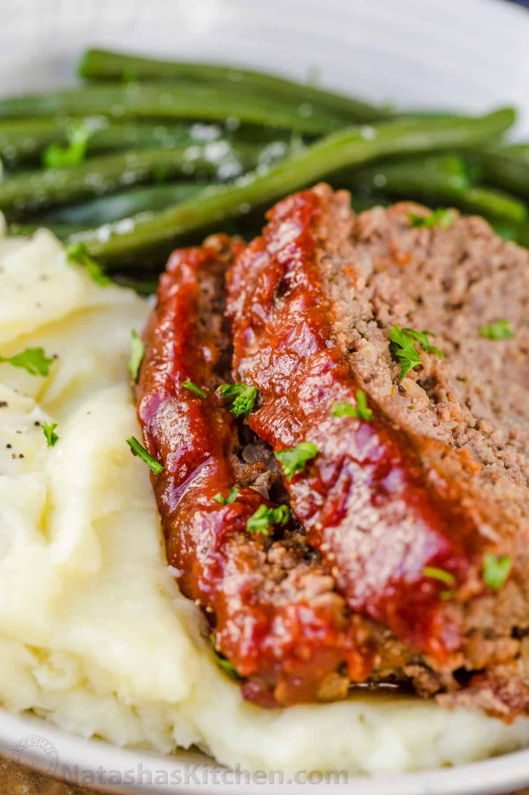

Meatloaf

Meatloaf recipe with the best glaze.
Ingredients
- 2 lbs ground beef, 85% - 90% lean
- 1 medium onion, finely chopped
- 2 large eggs
- 3 cloves of garlic, minced
- 3 tablespoons of ketchup
- 3/4 cup of Panko breadcrumbs
- 1 1/2 teaspoons of salt, or to taste
- 1 1/2 teaspoons of Italian seasoning
- 1/4 teaspoon of ground black pepper
- 1/2 teaspoon of ground paprika
Glaze
- 3/4 cup of ketchup
- 1 1/2 teaspoon of white vinegar
- 2 1/2 tablespoon of brown sugar
- 1 teaspoon of garlic powder
- 1/2 teaspoon of onion powder
- 1/4 teaspoon of ground black pepper
- 1/4 teaspoon of salt
Steps
- Preheat oven to 375℉
-
In a large bowl, add all of the ingredients for the meatloaf. Mix
thoroughly.
-
Add the meat mixture to the loaf pan, gently pressing it down to shape
evenly.
- Bake for 40mins.
-
In a small bowl mix together all the ingredientsfor the glaze. Spread
the glaze over the top of the meatloaf, continue to cook for a further
15-20mins or until the internal temp is 160℉.
-
Pull out of oven and let the meatloaf rest for 10mins before serving.
- Serve and Enjoy!